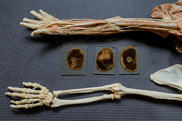
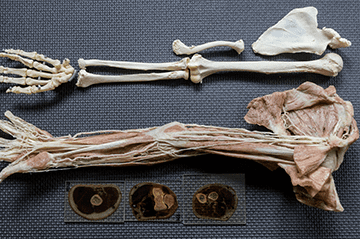
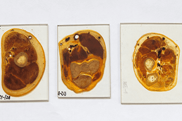
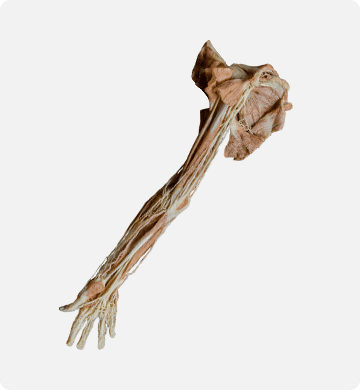

Семинар не имеющий аналогов
Семинар построен на реальных анатомических моделях, полученных методом эпоксидной пластинации (т. е. это части человеческого тела, где вода заменена на полимер).
Они лишены недостатка препаратов в анатомичке: без запаха, без выделения токсичных веществ. Их можно потрогать и оценить анатомические структуры так, как они реально расположены в человеческом теле, а не нарисованы в атласах.
Наличие поперечных срезов добавляет возможность оценить структуры послойно.
Фотогалерея



Знание топографической анатомии необходимо любым специалистам, непосредственно работающим с телом человека, по разным причинам:
- безопасности проведения лечебных и диагностических процедур
- специфичности и точности воздействия -четкого понимания структуры, с которой проводятся те или иные манипуляции
- контроля – умение ясно представлять глубину и топографию структуры позволяет оценивать ее состояние в режиме реального времени и ответ на лечебное воздействие
- анатомия – это универсальный язык, способствующий взаимопониманию во врачебном сообществе (для понимания мануальных терапевтов, остеопатов врачами более традиционных направлений)
- повышение комплаентности пациента: умение ответить на вопросы, что болит, где и почему.

- Вторым по важности моментом, часто упускаемым в обучении, является отсутствие переноса полученных знаний на живое человеческое тело: можно знать, где и как расположены связки, мышцы и нервы на препарате, но плохо представлять, как определить их положение на человеке, живом и покрытом кожей
- Таким образом, развитие навыков пальпаторной анатомии не менее важно, чем собственно сами анатомические знания.
- Именно эти знания и навыки мы и приглашаем Вас развить на нашем семинаре Анатомический cadaver-курс на пластинированных препаратах. Верхняя конечность
Cтруктура семинара:
- 1. Анатомия верхней конечности:
- Костные, суставные, связочные структуры.
- Мышцы свободной верхней конечности и плечевого пояса.
- Сосуды и нервы верхней конечности с демонстрацией точек.
- Анализ поперечных срезов плеча и предплечья.
- Топография анатомических структур рассматривается на препаратах.
- 2. МРТ и рентгенанатомия плечевого и локтевого суставов.
- 3. Отработка навыков пальпации мышц, суставов, связок и нервов в парах.
Что вы получите в результате семинара:
Разовьете или углубите знания топографической анатомии
Получите или усовершенствуете навыки чтения рентгеновских и МРТ-снимков
Отработаете навыки пальпации мышц, связок, сосудов и нервов
Для кого этот семинар:
- остеопаты, кинезиологи, мануальные терапевты, рефлексотерапевты;
- ортопеды-травматологи, неврологи, врачи ЛФК, реабилитологи;
- массажисты;
- фитнес-тренеры;
- люди без специального мед. образования,
- желающие приобрести знания в области анатомии.
Скворцов Сергей Михайлович
Ведущий врач травматолог-ортопед, мануальный терапевт, рефлексотерапевт, член международной остеопатической ассоциации IAHP, специалист по кинезиологическому тейпированию.
- Консультация 1900 р.
- Сеанс лечения 60 мин - 5900 р.